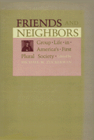

How Pennsylvania and vicinity provided the political, social, and economic pattern for the nation
How Pennsylvania and vicinity provided the political, social, and economic pattern for the nation


 How Pennsylvania and vicinity provided the political, social, and economic pattern for the nation
How Pennsylvania and vicinity provided the political, social, and economic pattern for the nation

|  |
Friends and NeighborsGroup Life in America's First Plural Societyedited by Michael Zuckermanncloth EAN: 978-0-87722-253-8 (ISBN: 0-87722-253-3) |
"This anthology is a welcome addition to the growing body of historical literature on the Middle Colonies."
—American Historical Review
Historians have been disposed in the past to attend unduly to the traditions of New England and the South. Today it seems increasingly clear that the configuration of American Civilization first found its essential contours into the Middle and South Atlantic regions, especially in the province of Pennsylvania. These essays, by young historians working in the Colonial period, show conclusively that in political, economic, social, and even religious life, Pennsylvania provided the pattern for the nation more than Massachusetts ever did.
These essays demonstrate the modern multiplicity of life in the middle colonies, raising questions about community and diversity alike. The version of American history that is essentially new England local history writ large is, in the final analysis, a version of a genteel Anglo-Saxon racism. The middle-colony model provides none of the reassurance for elite culture that the New England model does, since the middle colonies remind us that we are a plural people and force us to recognize conflicts at the very core of our culture. This book raises fascinating questions about the ways in which Americans and historians have chosen to see, and not to see, themselves.
Michael Zuckerman, Professor of History at the University of Pennsylvania, is also the author of Peaceable Kingdoms: New England Towns in the Eighteenth Century.
© 2015 Temple University. All Rights Reserved. This page: http://www.temple.edu/tempress/titles/258_reg.html.